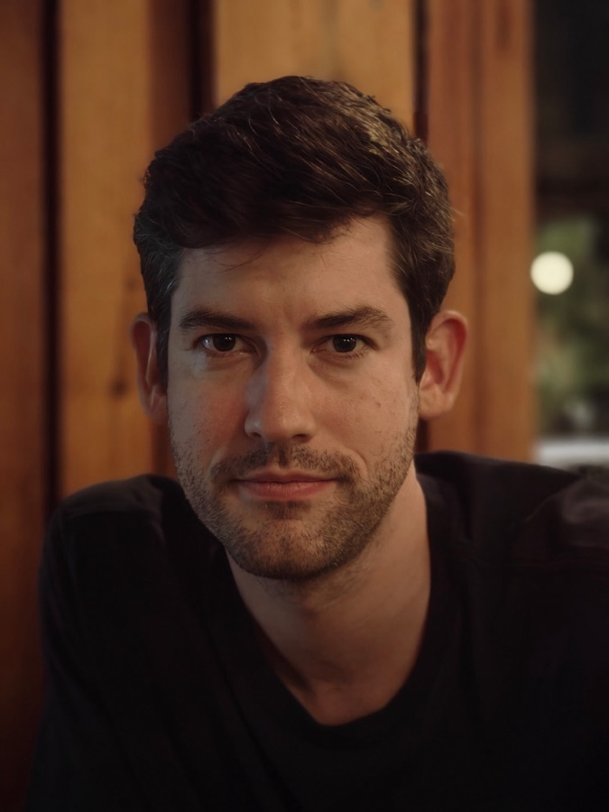
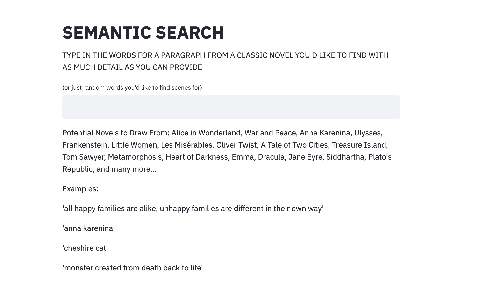
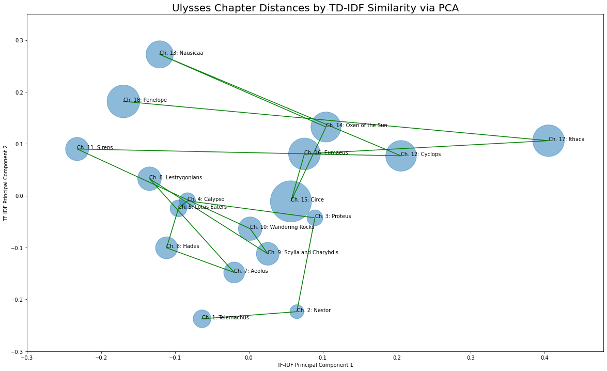

Brayton Hall
Data Scientist · Language Models · Philosophy and Literature

For the past several years I have worked on language models at large banks, mostly on the problem of reading: how a machine might usefully summarize a million documents, or the conversation a customer just had, or the shape of a fraud as it forms. The models themselves arrive almost finished. What remains is the slower work of making them trustworthy, and that is where my attention goes: evaluation, restraint, the long distance between a demonstration and a system.
Before any of this I studied philosophy, metalogic and number theory mostly, and taught logic and statistics at Virginia Tech. The question I cared about then was how symbols come to mean anything at all. I have not changed questions; the field changed instruments.
Off the clock: long runs (the occasional marathon), New York by ferry, movies at the Metrograph, the piano, writing, and slow, happy progress through Joyce and Proust.
Work & Education
Soon.
Lead developer of the company’s second production generative-AI use case: summarizing 1M+ highly sensitive documents for executive committees (≈$20M/yr). Model development, compliance, and monitoring for the fraud model covering every Capital One card (≈$400M/yr in prevented loss).
Built and monitored the bank’s primary abstractive-summarization pipeline for calls between agents and customers, trained on 600K agent notes and 150M transcribed conversations (≈$10M/yr), with custom summary-quality metrics.
ML on infant-brain fMRI (100K+ features) for early-intervention prediction: interpretable models, Shapley values, feature extraction.
Metalogic, number theory, philosophy of science and language. Taught logic and statistical inference.
Projects

Semantic Search
Search classic novels by connotation and misremembered quotes rather than exact fragments. Doc2Vec embeddings over Project Gutenberg.

Mapping Ulysses
Vectorizing each chapter of Joyce and plotting the novel’s drift through its own semantic space. Data science as literary criticism.
Summarizing War and Peace
Few-shot fine-tuning of pre-trained transformers for long-document summarization.
codeTwitter Topic Modeling
LDA over 100K pandemic-era tweets: finding the distinct communities and their sentiment.
code